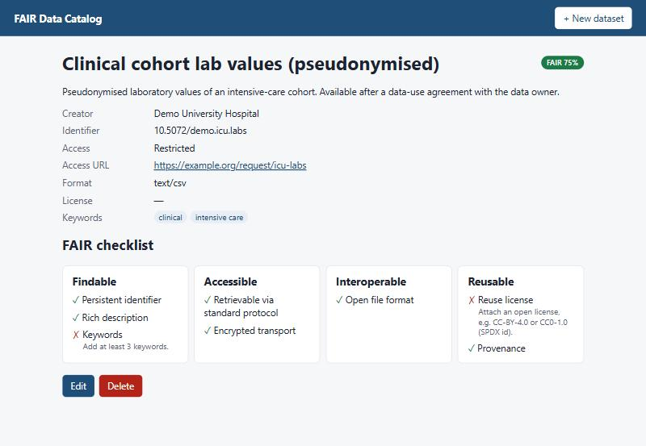
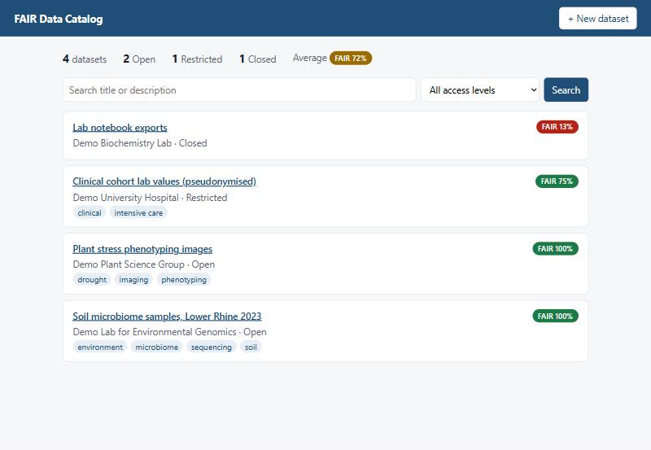

Full-stack · Spring Boot + React
FAIR Data Catalog
A catalog for research datasets that scores every entry against the FAIR principles and tells data stewards exactly what to fix: not just "62%", but "attach an open license, e.g. CC-BY-4.0".
- REST API with paged search, validation and
problem+jsonerrors - Flyway migrations, JPA Specifications, indexes for the real query paths
- JUnit 5,
@WebMvcTestand Testcontainers against PostgreSQL 16 - Docker Compose, Kubernetes manifests with probes and non-root containers
- Java 17
- Spring Boot 3
- PostgreSQL
- React 19
- TypeScript
- Docker
- Kubernetes
- GitHub Actions